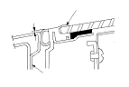
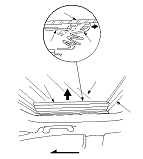
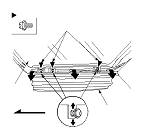

Sunroof Glass Height Adjustment
The roof panel (A) should be even with the glass weatherstrip (B), to within 0.4+1/−1 mm (0.016+0.04/−0.04 in.) all the way around. If not, make the following adjustment:

Pull the top of the inner blind (A) back from between the glass (B) and the glass support (C).

Turn the inner blind (A) back.
Using a T25 Torx bit, loosen the bolts on each side, and adjust the glass (B).
If necessary, repeat on the opposite side.
